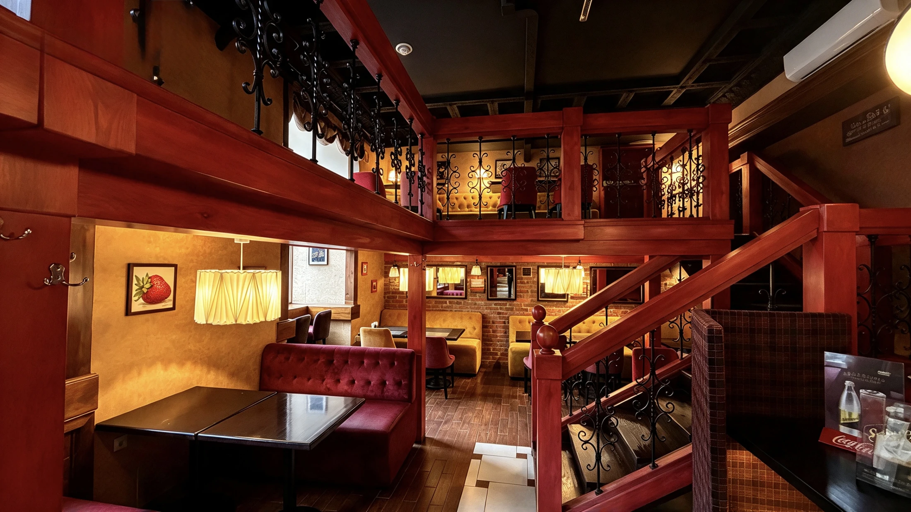
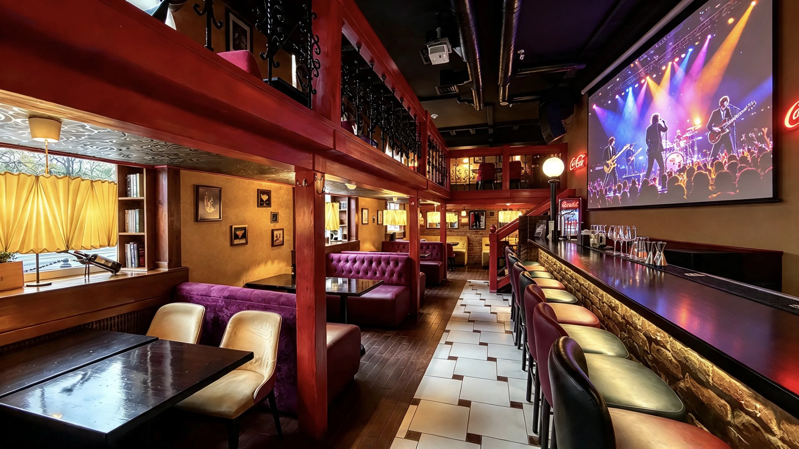

Ресторан ФаСоль в Гомеле

Европейская кухня · ГомельЗаглянуть в ресторан

Барное меню
Бокал вина к ужину, любимый напиток к встрече и кофе без спешки

Для маленьких
гостей
Детская комната, стульчики для малышей и своё меню — чтобы всей семье было хорошо
В будни с 15:00, в выходные с 12:00
Ждём вас
Гомель, Советская, 36+375 (44) 790-33-33- Понедельник — пятница
- 09:00–23:00
- Суббота — воскресенье
- 10:00–23:00